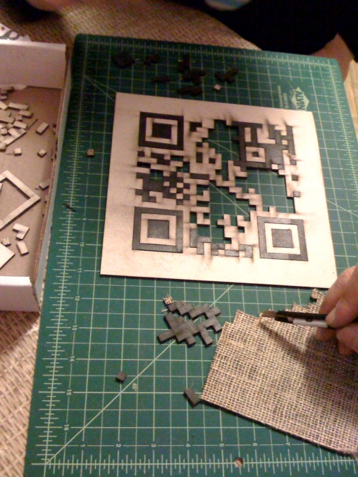

ToynbeeCodes link physical locations with electronic media using machine-cut, linoleum QRcode tiles in the spirit of the mysterious
Toynbee Tiles
.

View
ToynbeeCode locations
in a larger map
A joint project of:
Tikaro Interactive
&
eagleapex